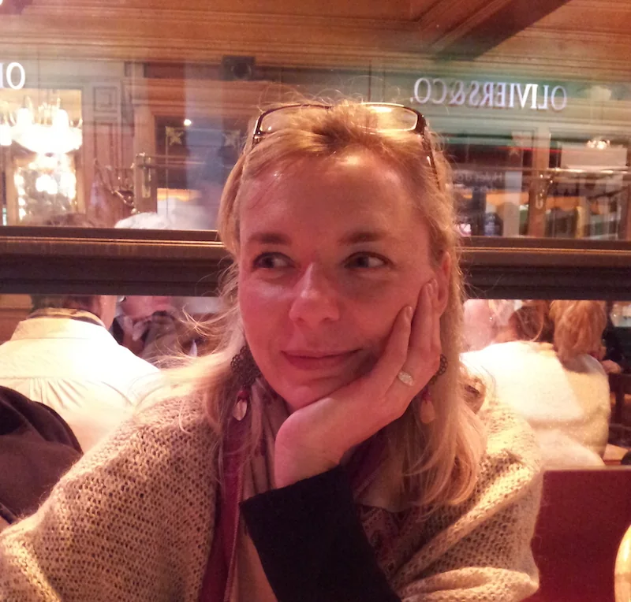

Valérie Bourimoff
Peintre. Paysages imaginaires, abstractions, aquarelles et dessins — une œuvre guidée par la couleur et la lumière.

Toutes ses expériences, ses rêves et ses émotions, Valérie Bourimoff laisse son subconscient les interpréter. En cela, elle sublime en un champ de couleurs, de riches espaces imaginaires.
Un monde inconnu fait de mystères et d'invisibilités qui finalement se révèlent à nous telle la réalité.
Ses œuvres traduisent le lointain et la création d'un lieu originel idéal, propre à son état d'être. C'est l'expression consciente, spontanée et instinctive d'une vie intérieure riche et profonde qui l'a fait voyager autant que son public.
Sa palette de couleurs reflète avec simplicité une âme pour laquelle la lumière est source de vie.
All her experiences, her dreams, her emotions, Valérie Bourimoff lets her subconscious interpret them in her art, sublimating rich imaginary landscapes in a space of colour.
An unknown world of mystery and invisibility that finally appears to us as reality.
Her work comes through to us from a distance, creating an ideal place out of her own state of mind.
Valérie's range of colours reflects with simplicity a soul for which light is the source of life.
La lumière est source de vie.
Formations
- Ateliers Arts plastiques Boulogne-Billancourt
- Atelier de la Vigne Philippe Lejeune, Franck Senaud, Jacques Rohaut
- Atelier Jason Lu Malte
Expositions
2019 — 2025
- Portes Ouvertes d'AteliersVille de Boulogne-Billancourt
2018
- Portes Ouvertes d'AteliersVille de Boulogne-Billancourt
- 44e Salon des ArtistesSuresnes
- Exposition collectiveMainvilliers
2016
- « Depth — thème de l'eau »Hôtel de Ville de Boulogne-Billancourt
- Salon des ArtsÉvry
2015
- 44e Salon des ArtsVaucresson
2014
- Galerie d'Agesseau — « Inner life »Boulogne-Billancourt
- 43e Salon des ArtsVaucresson
- « Life is in the air — thème de l'aérien »Hôtel de Ville de Boulogne-Billancourt
- « Choses étranges »Milly-la-Forêt
- Journées du PatrimoineCommunes des communes de l'Essonne
2013
- Exposition Villa-LobosÉcole de musique d'Étampes
- Exposition Jean CocteauMilly-la-Forêt
- Vente aux enchères au profit de l'APCHMairie d'Issy-les-Moulineaux
2012
- Galerie du Bois l'ÉpicierMaulette / Houdan
2011
- « La Mode dans tous ses états »Anne de Pisseleu, Étampes
- Exposition peintureHôtel de Ville de Boulogne-Billancourt
2010
- « Les communes des Communes »Anne de Pisseleu, Étampes
- Exposition photographieHôtel de Ville de Boulogne-Billancourt
2009
- Galerie Nikki MarquadtPlace des Vosges, Paris 4e
- Exposition peinture — Karé MagicVille de Boulogne-Billancourt
- Galerie Cyrille LegoffÉtampes
2006
- Salon de Ballancourt — Prix pour « Dubaï II »Ballancourt
- « Abstractions réunies »Bouville
2004
- Galerie ArtitudeMalte
© Photos non libres de droits. Adaptation, reproduction et diffusion strictement interdites du contenu du site sans l'accord écrit préalable de Valérie Bourimoff.
Entrer dans l'univers
Plus de cent œuvres, des abstractions verticales de 2003 aux toiles les plus récentes.
Voir lesœuvres